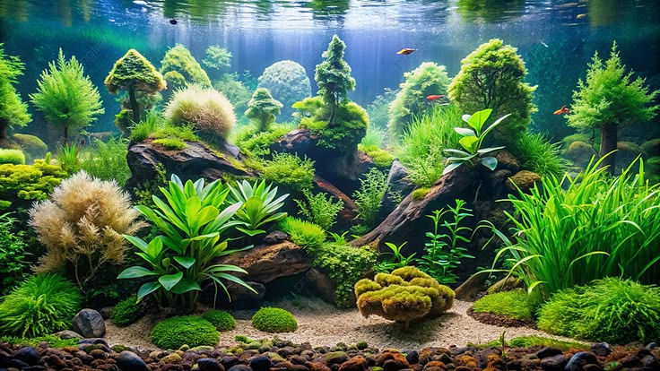

Odgovarajući prostor
Veličinu akvarijuma planiraj prema odrasloj veličini, ponašanju i potrebama odabranih ribica.
DOBRO DOŠAO U AQUASVET
Akvarijum unosi deo prirode u naš dom. Upoznaj osnovnu opremu, omiljene ribice i navike koje čuvaju njihov mali svet.
Istraži akvaristiku
OD DOBROG POČETKA DO MALE SVAKODNEVNE RUTINE
Veličinu akvarijuma planiraj prema odrasloj veličini, ponašanju i potrebama odabranih ribica.
Različite vrste imaju različite navike. Pre kupovine proveri njihove uslove i međusobno slaganje.
Posmatraj stanovnike, proveravaj kvalitet vode i neguj rutinu umerenog hranjenja i održavanja.